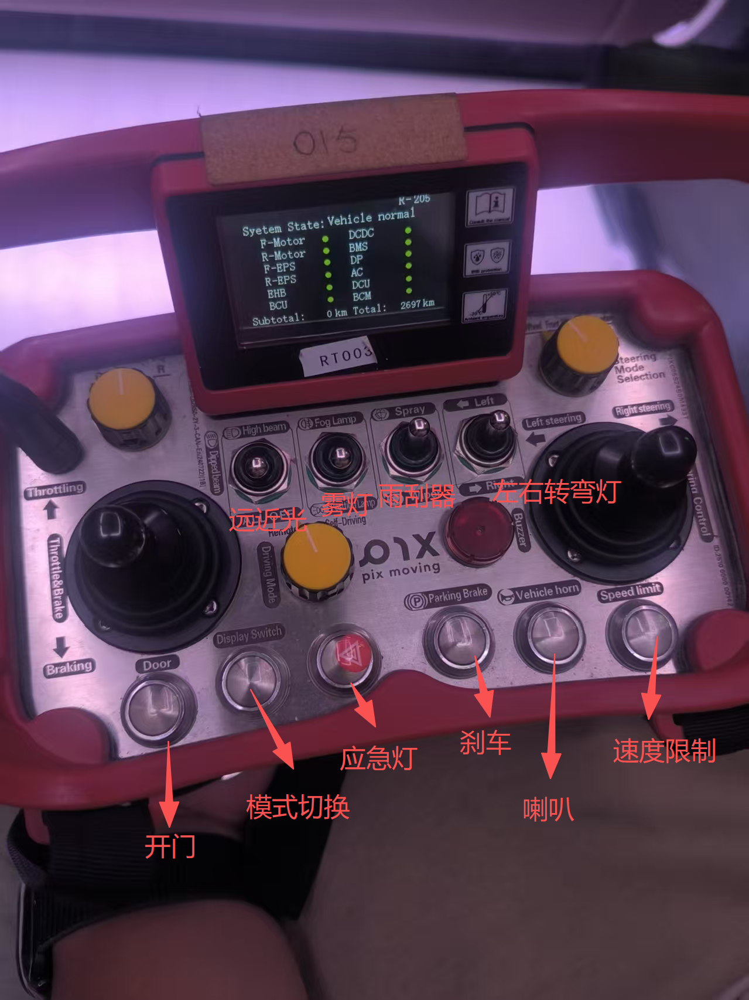

车辆硬件与车载网络
把车辆看成一个机器人：传感器负责“看”，组合导航负责“定位”，IPC 负责“思考”，VCU 负责“执行”，网络设备负责传递数据。
一眼分清硬件角色
| 设备 | 类比 | 主要职责 |
|---|---|---|
| 摄像头 | 眼睛 | 获取颜色、纹理、车道线、交通灯和目标类别。 |
| 激光雷达 | 三维测距眼睛 | 输出点云，测量空间位置、距离和物体轮廓。 |
| 超声波雷达 | 贴身防撞触角 | 检测车头、车尾附近的极近距离障碍物。 |
| 组合导航 | 位置感与平衡感 | 融合 GNSS 与 IMU，输出位置、姿态、速度和精确时间。 |
| ADCU | 传感器汇聚中心 | 接入 GMSL 相机、部分雷达、PPS、串口和网络数据。 |
| 自驾 IPC | 大脑 | 运行 ROS 2、Autoware、感知、定位、规划和控制。 |
| VCU | 手和脚 | 执行驱动、制动、转向、挡位和车辆安全状态机。 |
| 交换机 / 路由器 | 神经网络 / 出口 | 交换机连接车内设备；路由器连接 5G、Wi-Fi 和外部平台。 |
环境感知与定位设备
摄像头
项目材料中包含 8 个车外相机：6 个约 3 mm 广角周视相机和 2 个约 1.51 mm 鱼眼补盲相机。
| 类型 | 数量与位置 | 视场与用途 |
|---|---|---|
| 3 mm 周视相机 | 前、后、前左、前右、后左、后右 | 约 118°×62°，兼顾范围和细节，用于车辆、行人、车道线和交通灯识别。 |
| 1.51 mm 鱼眼相机 | 车前补盲、车后补盲 | 约 196°×112°，视野极宽，但边缘畸变更明显、远处目标更小。 |
森云型号如 SG2-AR0233C-5200-G2A-H120UA 可按“产品系列—图像传感器—ISP—GMSL2 配置—镜头配置”理解。具体字符含义应以厂家型号表为准，不能只靠名称猜测。
- AR0233/OX08BC：图像传感器方案，作用类似“视网膜”。
- ISP：完成曝光、白平衡、降噪、HDR、色彩和图像格式处理。
- GMSL2：通过车载高速串行链路把多路视频送入 ADCU。
- PoC：同轴线同时传输视频与供电；不要与以太网 PoE 混淆。
激光雷达
M1Plus ×2
前顶与后顶，偏中远距离前后感知。项目配置约 180 m、水平 120°、垂直 25°。
Airy ×2
前左与前右，补充近距离和转弯盲区。项目配置约 30 m、水平 360°、垂直 90°。
E1R ×1
车尾正面，负责倒车和后方近距离补盲。项目配置约 30 m、水平 120°、垂直 90°。
这些数值是项目材料中的配置，应以实际设备铭牌、固件和说明书为准。雷达通常输出 x/y/z、反射强度、时间戳和状态信息。
超声波雷达
一套系统可能包含 1 个控制器和 12 个探头，所以设备清单写“1 套”，不代表只有 1 个探头。它适合泊车、倒车和车身附近防碰撞，不替代激光雷达的中远距离三维感知。
组合导航
组合导航由 GNSS、IMU 和融合算法组成。双 GNSS 天线不仅定位，还能在车辆静止时更稳定地估计航向。
Ethernet
传输完整导航数据、状态、配置和调试信息。
RS232
传输经纬度、姿态、速度、加速度、角速度等实时报文。
PPS
提供每秒精确脉冲，是“什么时候”的时间基准，不传输位置内容。
ADCU、IPC、VCU 与其他控制器
ADCU：把数据接进来
ADCU 通常具备多路 GMSL、车载以太网、普通以太网、CAN、PPS 和 RS232。它负责相机解串、传感器同步、部分数据预处理与汇聚，再把数据送给自驾 IPC。
自驾 IPC：拿数据做计算
工业计算机中的 CPU 负责 ROS 2、规划、通信和控制逻辑，GPU 负责神经网络与大规模并行计算，内存缓存图像/点云/地图，SSD 保存系统、模型、地图、rosbag 和日志。
VCU：把命令变成车辆动作
IPC 计算目标速度、转向和制动请求，VCU 负责实时执行、安全检查、故障保护，并反馈实际车速、转角、挡位和制动状态。
BCM 与视频监控主机
BCM 负责车灯、车门、雨刷、喇叭等车身功能；视频监控主机负责显示、录像、CMS 屏幕与音频，避免这些任务影响自动驾驶主计算的实时性。
最容易混淆：ADCU 主要接设备和汇聚数据，IPC 主要跑算法，VCU 主要执行车辆动作。
交换机、路由器与多网卡
工业交换机
连接同一车内局域网的 IPC、ADCU、雷达和导航设备。M12 锁紧接口更耐振动，千兆链路适合图像和点云大数据。
5G 车载路由器
连接不同网络，提供 5G、Wi-Fi、网关、远程监控、日志上传或远程驾驶链路。
一台 IPC 可以拥有多块物理网卡和多个 IP。给高带宽雷达分配独立网卡/子网，能降低拥塞、隔离故障并简化路由。调试时应先确认设备与对应网卡位于同一子网，再检查链路与流量。
练习边界：以下命令只允许在导师指定的教学主机或已授权环境中做只读检查。tcpdump 可能捕获敏感数据并增加系统负载，不要擅自在真实车辆运行，也不要公开原始抓包。
ip -br addr # 查看网卡与地址
ip route # 查看路由
sudo ethtool <网卡名> # 查看链路、速率、双工
ping -I <网卡名> <设备IP>
sudo tcpdump -i <网卡名> # 查看是否有数据包
ip -s link # 查看收发与错误计数常见接口和术语
| 名称 | 类型 | 主要用途 |
|---|---|---|
| Ethernet | 网络协议族 | 传输点云、图像、导航、状态和文件。 |
| GMSL2 | 车载高速视频链路 | 相机到 ADCU 的视频、控制与同步。 |
| CAN | 车辆控制总线 | 传输控制命令、状态和故障，数据量小但实时可靠。 |
| PoE / PoC | 供电方式 | 分别通过以太网双绞线 / 同轴线同时供电和传输数据。 |
| RS232 / PPS | 串口 / 时间脉冲 | 导航报文 / 精确时间同步。 |
| RJ45 / M12 | 连接器 | 普通网口 / 工业锁紧式网口。连接器外形不等于链路速率。 |
| FAKRA / Mini-FAKRA | 车载高速连接器 | 摄像头、GMSL、射频或天线信号。 |
| H-MTD / FGG | 车载高速 / 圆形连接器 | 描述物理连接形式，内部可能承载以太网。 |
| HDMI / DP / USB | 视频 / 通用外设 | 连接显示器、扩展坞、键鼠、存储和调试设备。 |
| DI / AI | 数字 / 模拟输入 | DI 表示开关量；此处 AI 通常是 Analog Input，不是人工智能。 |
设备面板上的 PoE、CAN 和急停
- PoE-1～PoE-4：可连接网络相机、雷达或其他以太网传感器，一根线可能同时承担供电和数据。
- CAN0 / CAN1：两路独立 CAN 通道，可用于底盘、组合导航、调试设备或不同控制域；实际分配必须查看线束针脚表和 DBC。
- E-STOP：急停接口连接安全回路，用于禁止驱动、触发制动或进入安全状态，不可随意短接。
- 电源按钮：可能用于启动、关机或复位；短按/长按行为要以设备说明书为准。
- 保护盖区域：仅凭外观无法确认内部功能，不应猜测为普通网口。
辅助车载设备
CMS 屏幕与显示大屏
显示左后、右后、正后摄像头或车辆状态。DP/HDMI 转换器、锁频器和虚拟显示器可稳定分辨率与远程桌面。
Pad 与扩展坞
通过 Wi-Fi、Type-C 或千兆网口接入车辆网络，用于任务启停、状态查看、地图与工程调试。
音频系统
USB 声卡、共地隔离器、功放、车内/车外扬声器和麦克风承担提示音、广播、远程沟通和监控。
DC-DC 与电源
把车辆电源转换为设备所需稳定电压。接线必须确认输入范围、输出电压、电流、功率和极性。
环境与乘员传感器
CO₂、烟雾、座椅压力、安全带和温度传感器可支持通风、预警、乘员检测和车身安全逻辑。
AC 与 BCM
AC 负责空调、风速和温度；BCM 负责车灯、车门、雨刷、喇叭和其他车身功能。
典型数据流
8 路车外相机 → GMSL2 → ADCU → 以太网 → 自驾 IPC → 图像感知
M1Plus / E1R → 以太网 → ADCU → 自驾 IPC → 点云感知
前左 / 前右 Airy → 独立网口 → 自驾 IPC → 点云感知
GNSS + IMU → 组合导航 → Ethernet / RS232 / PPS → 定位与同步
规划控制 → IPC CAN 接口 → CAN 总线 → VCU → 转向 / 制动 / 驱动
视频监控主机 → 屏幕 / 功放 / 扬声器 → 显示、录像与提示音车辆控制面板

安全提醒：急停、驾驶模式、制动和速度限制属于安全相关控制。实际操作必须遵守车辆操作规程，不可根据图片自行短接、改线或绕过保护逻辑。